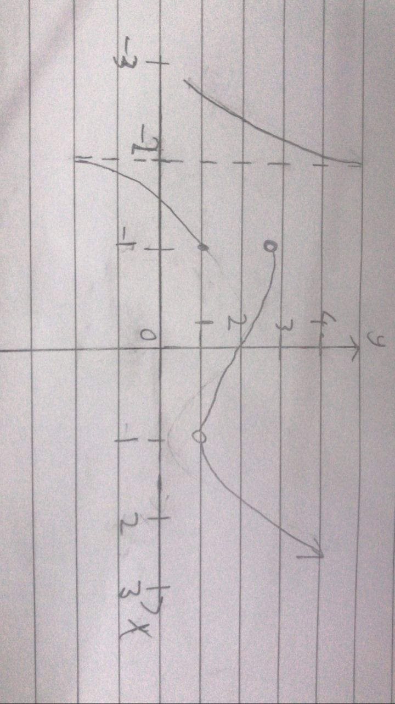

ⓘ
If both the left side and right sides limit of a function, $$f(x)$$, have the same value, the limit exists.
Based on the graph above
| $$\lim_{x->0}f(x)$$ | $$\lim_{x->2}f(x)$$ |
|---|---|
| $$\lim_{x->0^+}f(x) =-1$$ $$\lim_{x->0^-}f(x) = -1$$ $$\lim_{x->0}f(x) = -1$$ | $$\lim_{x->2^-} f(x)= 1$$ $$\lim_{x->2^+}f(x) = 2$$ $$\lim_{x->2}f(x) = DNE$$ |
PROP ER TIES
Limits can be evaluated analytically due to a variety of properties. In the cases of which a and b are both real numbers and are positive integers:
| Property i) When the variable in the limit is not part of the function $$\lim f(x) = f(x)$$ | $$\lim_{x->b}a= a$$ |
| Property ii) When the direct substitution doesn't yield an error and the variable in the limit is part of the function | $$\lim_{x->b}x= b$$ $$\lim_{x->b}x^n= b^n$$ |
If a and b are real numbers, f and g are functions as $$\lim_{x->b}f(x)= M$$ and $$\lim_{x->b}g(x)= T$$
Property iii)
$$\lim_{x->b}[f(x) ± g(x)]= M \pm T$$
Property iv)
$$\lim_{x->b}[f(x) • g(x)]= M • T$$
Property v)
$$\lim_{x->b}\frac{f(x)}{g(x)} = \frac{M}{T}, T \neq 0$$
Property vi)
$$\lim_{x->b}[f(x)]^n= M^n$$
Learn more at:
https://www.slideserve.com/gyala/properties-of-limits-powerpoint-ppt-presentation https://medium.com/betamat-en/limit-properties-f06e6cd02c3fEXAMPLES
Eg 1. |
$$\lim_{x->4}(3x+6) = \lim_{x->4}(3x) + \lim_{x->4}(6)$$ $$= 3 \lim_{x->4}(x) + \lim_{x->4}(6)$$ $$= 3(4) + 6$$ $$= 18$$ |
Eg 2. |
$$f(x)= 8x-6$$ $$g(x)= 2x^3 + 5x$$ $$\lim_{x->2}(f•g)(x) = \lim_{x->2}f(x) •\lim_{x->2}g(x)$$$$\lim_{x->2}(2x^3+5x) = 26$$ $$\lim_{x->2}((8x-6)•26) = 260$$ |
Eg 3. |
$$f(x)= 2x^2 + 15x - 8$$ $$g(x)= x^2 + 10x + 16$$ $$\lim_{x->3}\frac{f}{g}(x)$$ $$=\frac{\lim_{x->3}f(x)}{\lim_{x->3}g(x)}$$ $$\lim_{x->3}(2x^2+15x-8) = 55$$ $$\lim_{x->3}(x^2+10x+16) = 55$$ $$\frac{\lim_{x->3}(2x^2+15x-8)}{\lim_{x->3}(x^2+10x+16)} = 1$$ |
Eg 4. |
$$f(x) = x$$ $$\lim_{x->3}[f(x)]^5 = \lim_{x->3}x^5 = 3^5 = 243$$ |
CONTINUITY
If a function is continuous on the interval [c,d], it is continuous at each and every point on the interval.
A function $$f(x)$$ is said to be continuous at x=c if:
$$\lim_{x->c}f(x)= f(c)$$
Example

Given the graph of f(x), shown above, determine the types of discontinuities and any point where it is continuous.
Infinite discontinuity
At point x = -2, the left limit approaches $$+\infty$$ whereas the right limit approaches $$-\infty$$.
Jump discontinuity
At x = -1, $$f(-1) = 1$$ , $$\lim_{x->-1}f(x)$$ does not exist
There is a value at x = -1. However, the left and right side limits are unequal and are not infinities. The function is not continuous at this point because the graph has a break in it. This kind of discontinuity is called a jump discontinuity.
Continuity
$$f(0)=2$$ , $$\lim_{x->0}f(x)=2$$
Function and limit have the same value. The function is continuous at this point.
Removable discontinuity
$$f(1)= DNE$$ , $$\lim_{x->1}f(x)=1$$
In this case, there is a hole in the graph, meaning the function is discontinuous at this point. However, the limit exists at this point. This kind of discontinuity is called a removable discontinuity.
Learn more at:
https://tutorial.math.lamar.edu/Classes/CalcI/Continuity.aspxPIECEWISE
A piecewise function is a function that can be divided into pieces; it generates functions that behave differently depending on the input (x) value.
Example
The image above is a function that made up of 3 pieces:
From -∞ to -1, : Straight line
From -1 to 1, the graph: Constant
From 1 to ∞, the graph: Quadratic
∴ In this example, the piecewise function is continuous. (no gap and breaks)
Step Functions
- A piecewise function containing all constant "pieces". (The output remains constant within each branch and changes in value from one interval to the next.)
- A step function is discontinuous.
Example
Learn more at:
https://www.mathsisfun.com/sets/functions-piecewise.html https://medium.com/betamat-en/limit-properties-f06e6cd02c3fZERO DIVIS/ON ERR0R
$$\lim_{h->0}$$ means that h approaches, gets infiniely close to 0, but not exactly 0
Therefore, to solve equations involving limits, we manipulate the equation so that we can remove the h from the denominator.
$$=\lim_{h->0} 2(h-6)$$
Say the above is an equation after removing the h from the denominator, we can then substitute the final h as 0 as an approximation, and the reason we can simply substitute h as 0 is due to it being a converging infinity:
$$=2(0-6)$$
$$=-12$$
STRATEGIES
3 examples of ways to solve limits:
1. Factorizing
$$\lim_{x->2}\frac{x^2+4x-12}{x^2-2x}$$Factor $$\frac{x^2+4x-12}{x^2-2x}$$
$$= \frac{(x+6)(x-2)}{x(x-2)}$$Cancel out (x-2) on top and bottom
$$= \frac{x+6}{x}$$Then sub 2 into x
$$= (2+6)2$$ $$= 4$$2. Rationalizing
$$\lim_{x->6}\frac{x-6}{\sqrt{x-2} - 2}$$ $$=\lim_{x->6}\frac{x-6}{\sqrt{x-2} - 2} • \frac{\sqrt{x-2} + 2}{\sqrt{x-2} + 2} $$ $$\sqrt{x-2} - 2 DOT \sqrt{x-2} + 2 = x - 6$$ $$\lim_{x->6}\frac{(x-6)(\sqrt{x-2} + 2)}{x-6}$$Now, cancelling out the (x-6) from the denominator with the numerator allows substitution without error
$$=\lim_{x->6}\sqrt{x-2} + 2$$ $$= 2 + 2$$ $$= 4$$3. Substitution
$$\lim_{x->0}\frac{(x+8)^{1/3} -2}{x}$$Let $$u = (x+8)^{1/3}$$
$$x+8 = u^3$$ $$x = u^3 - 8$$ $$\lim_{x->0}\frac{(x+8)^{1/3} -2}{x} = \lim_{x->0}\frac{u-2}{u^3-8}$$As $$x->0, u^3 - 8 -> 0, u -> 2$$
$$ = \lim_{u->2}\frac{u-2}{(u-2)(u^2+2u+4)}$$Cancelling out the $$(u-2)$$ from the denominator with the numerator allows substitution without error
$$= \lim_{u->2}\frac{1}{u^2+2u+4}$$ $$= \frac{1}{(2)2+2(2)+4}$$ $$= 112$$Learn more at: